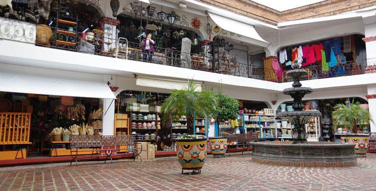

Mercado de artesanias

El Museo de Arte Popular de Valle de Bravo es un lugar donde se exhiben diferentes artesanías mexicanas elaboradas a mano. Cuenta con piezas como alebrijes, cerámica, figuras religiosas y objetos decorados que representan las tradiciones de nuestro país. Es un lugar atractivo porque permite conocer el talento de los artesanos y aprender sobre la cultura mexicana. Además, ayuda a conservar nuestras costumbres y tradiciones.
Es un espacio creado en 1984 para apoyar a los artesanos locales y dar a conocer sus trabajos. Se encuentra en la avenida Benito Juárez, en la zona de San Antonio.
Artesanias

Es atractivo porque los visitantes pueden conocer y comprar artesanías elaboradas a mano, observar la creatividad de los artesanos y llevarse recuerdos representativos de Valle de Bravo. También ayuda a conservar las tradiciones y apoyar la economía de las familias artesanas.
El Mercado de Artesanías es importante porque mantiene vivas las tradiciones mexicanas, promueve el talento de los artesanos y permite que los visitantes se lleven un recuerdo de la cultura y la identidad de Valle de Bravo.